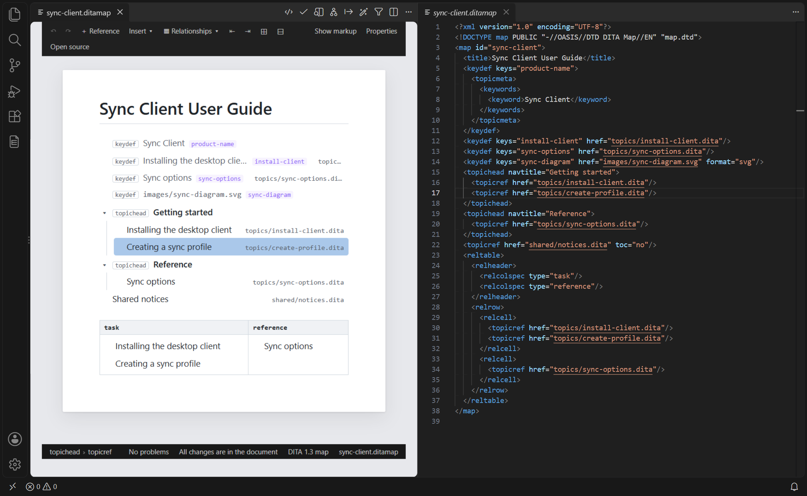
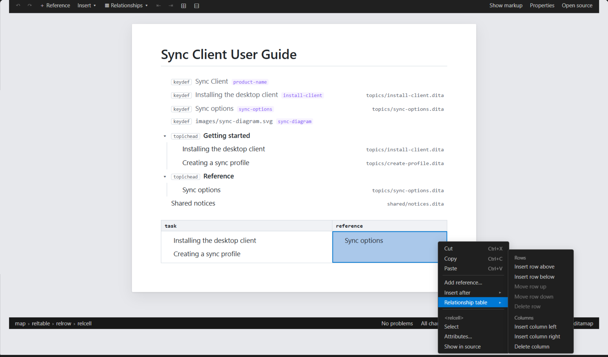

Maps and Bookmaps in the Visual Editor
A map or a bookmap opens in the visual editor as its title and one row per reference, each row showing the title of what it points to. Add references from a picker, change their targets and labels, and rearrange them by dragging or with Tab.
One Row per Reference
Open a .ditamap or .bookmap file with
DITA: Open in Visual Editor, as you open a topic. The page
shows the map's title, then one row for each reference — <topicref>
and every element specialized from it, such as <chapter>,
<part>, <appendix>,
<keydef>, <topichead>,
<topicgroup> and <mapref> — with
the rows a reference holds indented under it.
- Label
- The
<navtitle>of the reference's<topicmeta>, else its@navtitle, else the title of the topic or map it points to — read from that file, or through the key for@keyref, and kept up to date when the file changes, saved or not — else the text of a key, else the target as written. - Kind
- The element's name in a small label (none for a plain
<topicref>). - Keys
- The keys the reference defines (
@keys). - Target
- The
@hrefor@keyrefas written, on the right.

A target that cannot be read — a missing file, a key that is not defined — is marked,
with the reason in its tooltip. A web address or another format, such as a PDF, is
shown as written. A reference's <topicmeta> and a book's
<bookmeta> are hidden; Show markup
shows them under their rows, where you can edit them. Relationship tables are shown as
tables.
Working with Rows
- Select — click a row. The Properties View shows its
attributes: set
@href,@navtitle,@keys,@tocor@processing-rolethere. - Open the target — double-click the row, Ctrl+click it, press Enter, or choose Open target in the right-click menu. The topic opens beside the map, at its element; a file of another format opens in VS Code's editor for it.
- Fold — click the arrow before a row to hide or show the rows under it; Expand all and Collapse all are on the toolbar. Folding changes the page only, never the map.
- Keyboard — with a row selected, Up and Down go to the previous and next row shown, Left folds the row (or goes to the row above it), Right unfolds it (or goes to its first row). Typing does nothing on a row.
- Problems — a problem on a reference marks its row; its quick fixes work as in a topic (see Problems and Quick Fixes in the Visual Editor).
Editing the Map
- Add a reference
- Add reference… (+ Reference on the
toolbar, or the right-click menu) opens a picker with the keys of the root map,
the topics and maps of the workspace, and web addresses. The reference to the
one you choose goes after the selected row: a
<topicref>, or a reference of the same kind as the selected row where the DTD requires it (a<chapter>after a chapter in a bookmap). The new row is selected and shows its target's title. - Change a row's target
- Change target… (Ctrl+K, or the right-click menu) points the selected row at another topic, map or key with the same picker; its other attributes stay.
- Edit a label
- Edit label (F2, or the right-click
menu) edits the label on the row; Enter writes it,
Escape cancels. It becomes the row's navigation title
(its
<navtitle>, or its@navtitleif it has one), and a reference to a topic gets@locktitleset toyesso that the published navigation shows it. An empty label removes the navigation title: the row shows the topic's title again. - Nest and move rows
- Tab puts the selected row into the row before it; Shift+Tab takes it out, after the row that held it. Or drag a row by its line: a line shows where it goes — before or after another row, or into it — wherever the DTD allows it; Escape cancels. A row moves with everything it holds.
- Insert, move, delete
- Insert (toolbar or right-click menu) adds, after the selected row, any element the DTD allows there; Move up, Move down and Delete in the right-click menu work on the row.
As for topics, every change reaches the file as a small text edit: a moved row is written in its new place with its indentation adjusted, and the rest of the map stays exactly as it was. Ctrl+Z undoes each change.
A Topic in Its Map
The visual editor and the visual preview show a topic in a place of a map: the first map found that references it, or the place you choose. The status line shows it — the map's title and the navigation above the topic — and a click on it, or DITA: Choose Map Context, lets you choose another place, or no map.
- The topic's keys are those of that map, in the key scope of the reference: a topic used for two products shows each product's values.
- Generated text, such as note labels, follows the topic's language, else the language the map gives it; and when the active DITAVAL filter excludes the topic in that map, the preview says so.
- Opening a topic from a row of a map (Open target) shows it in that row's place.
Relationship Tables
A relationship table (<reltable>) is shown as a table: each column
header shows the type of topics the column relates (its @type, set in the
Properties view with the header selected), and each cell holds references, shown as
rows. An empty cell says so.
- Add a table — Insert relationship table (the Relationships menu of the toolbar) adds a table of three columns and one row, after the selected row where the DTD allows it, else at the end of the map.
- Select a cell — click its empty space. With a cell selected, the arrow keys go to the cell above, below, left or right, Tab to the next cell (past the last one, it adds a row), and Enter adds a reference into the cell from the picker. You can also drag a reference into a cell.
- Rows and columns — Relationship table in the right-click menu inserts rows above or below, moves and deletes them, and inserts or deletes columns. The table stays a grid: a new row has a cell for every column, and a column is added or deleted with its header and its cell in every row.
